Aktuálna ponuka
Nehnuteľnosti, ktoré ponúkam
19 nehnuteľností na predaj a prenájom. Vyberte typ, alebo napíšte lokalitu.
19 z 19 ponúk
 Hotely a penzióny10
385 000 €Apartmánový dom na predaj blízko termálneho kúpaliska
Veľký Meder
232 m²
Ponúkame Vám na predaj apartmánový dom blízko termálneho kúpaliska vo Veľkom Mederi. V apartmánovom dome sa nachádzajú štyri kompletne zariadené…
Hotely a penzióny10
385 000 €Apartmánový dom na predaj blízko termálneho kúpaliska
Veľký Meder
232 m²
Ponúkame Vám na predaj apartmánový dom blízko termálneho kúpaliska vo Veľkom Mederi. V apartmánovom dome sa nachádzajú štyri kompletne zariadené…
 Chaty a chalupy10
385 000 €Apartmánový dom na predaj blízko termálneho kúpaliska
Veľký Meder
232 m²
Ponúkame Vám na predaj apartmánový dom blízko termálneho kúpaliska vo Veľkom Mederi. V apartmánovom dome sa nachádzajú štyri kompletne zariadené…
Chaty a chalupy10
385 000 €Apartmánový dom na predaj blízko termálneho kúpaliska
Veľký Meder
232 m²
Ponúkame Vám na predaj apartmánový dom blízko termálneho kúpaliska vo Veľkom Mederi. V apartmánovom dome sa nachádzajú štyri kompletne zariadené…
 Rodinné domy5
350 000 €Dunajská Streda – 7-izbový rodinný dom na predaj blízko k termálnemu k
Dunajská Streda
7-izbový408 m²
Ponúkame Vám na predaj 7 izbový rodinný dom v Dunajskej Streda v tesnej blízkosti Termálneho kúpaliska . Má dve podlažia a je celkom podpivničený.…
Rodinné domy5
350 000 €Dunajská Streda – 7-izbový rodinný dom na predaj blízko k termálnemu k
Dunajská Streda
7-izbový408 m²
Ponúkame Vám na predaj 7 izbový rodinný dom v Dunajskej Streda v tesnej blízkosti Termálneho kúpaliska . Má dve podlažia a je celkom podpivničený.…
 Rodinné domy10
255 000 €Vkusný 4-izbový rodinný dom s garážou na predaj v obci Topoľníky
Topoľníky
135 m²
Ponúkame Vám na predaj vkusný 4-izbový rodinný dom s garážou v obci Topoľníky. Rodinný dom má dobré dispozičné riešenie, denná časť je oddelená od…
Rodinné domy10
255 000 €Vkusný 4-izbový rodinný dom s garážou na predaj v obci Topoľníky
Topoľníky
135 m²
Ponúkame Vám na predaj vkusný 4-izbový rodinný dom s garážou v obci Topoľníky. Rodinný dom má dobré dispozičné riešenie, denná časť je oddelená od…
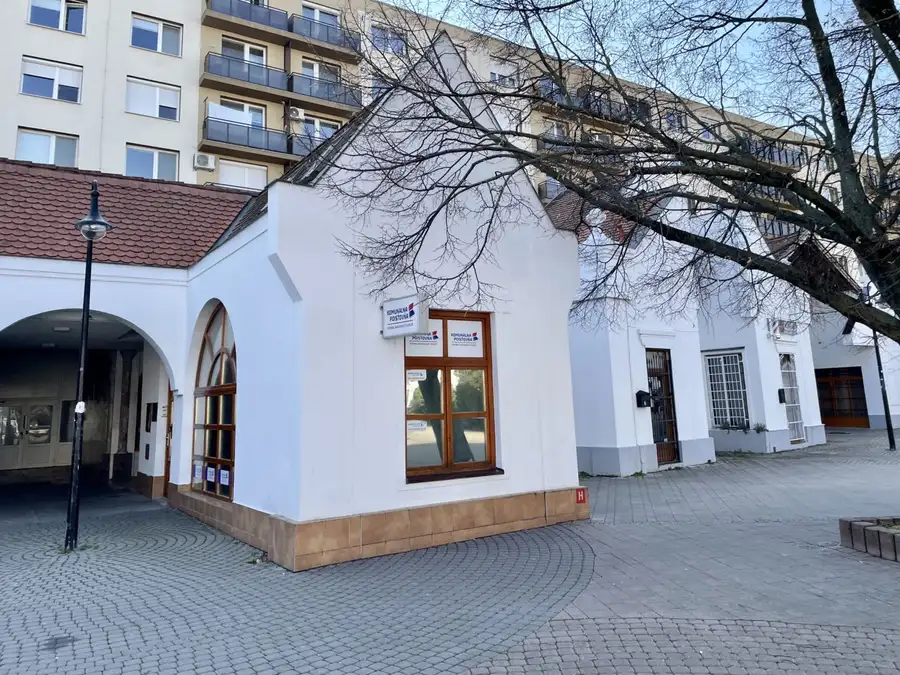
Nebytové priestory10 98 600 €Dunasjká Streda – obchodná/administratívna budova priamo v centre mest Dunajská Streda 58 m² Ponúkame Vám na predaj obchodnú / administratívnu budovu priamo v centre mesta Dunajskej Stredy, na Námestí Ármina Vámbéryho. V budove na prízemí je…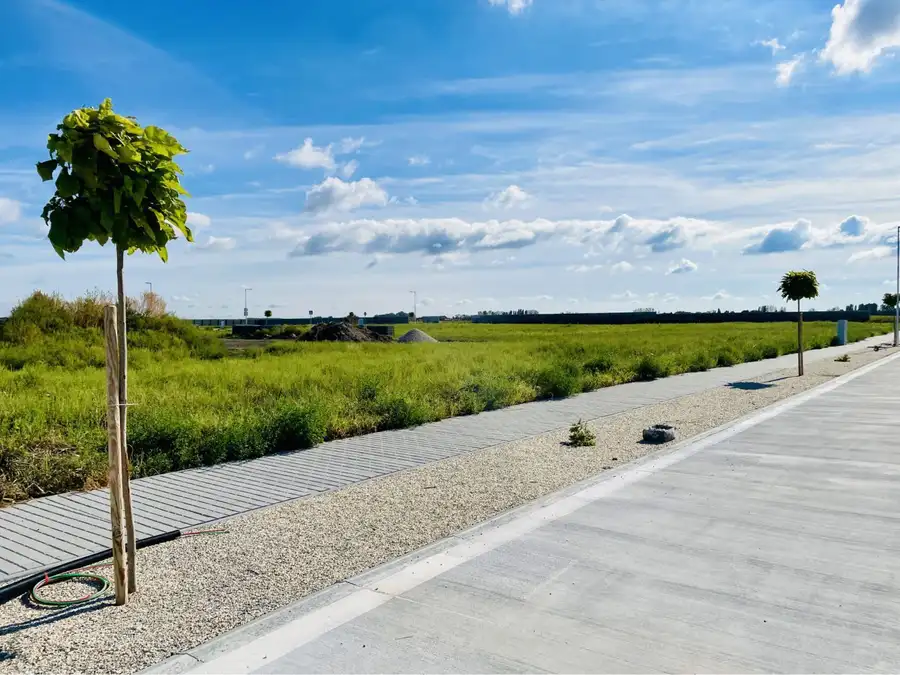
Pozemok10 112 000 €Dunajská Streda – slnečné stavebné pozemky na predaj v projekte Vinica Dunajská Streda 700 m² Ponúkame Vám na predaj slnečné stavebné pozemky v projekte Obytný park Vinica. Pozemky sa nachádzajú v kľudnej slepej ulici s betónovou prístupovou…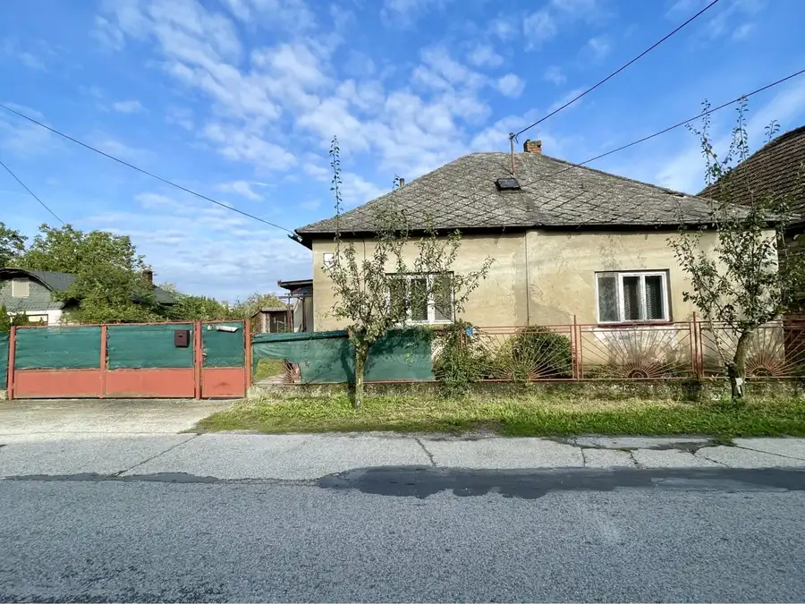
Rodinné domy7 73 000 €Jahodná – starý rodinný dom s pekným stavebným pozemkom na predaj Jahodná 100 m² Ponúkame Vám na predaj starý rodinný dom s pekným stavebným pozemkom v obci Jahodná. Rodinný dom potrebuje kompletnú rekonštrukciu, alebo po zbúraní…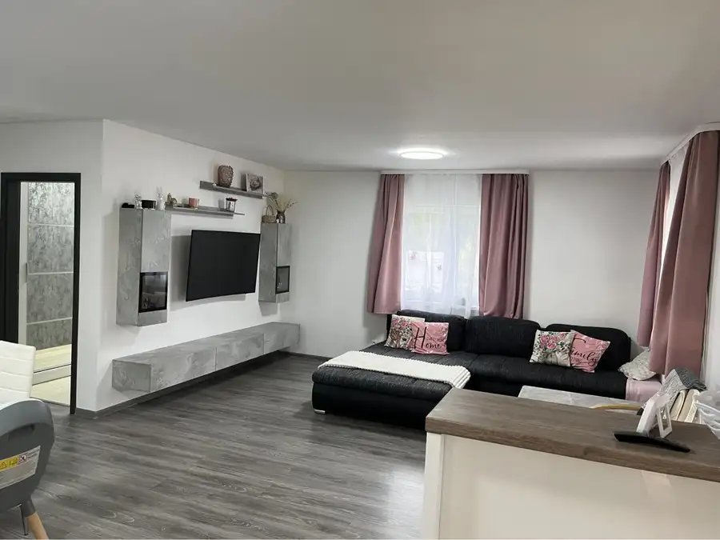
Rodinné domy10 310 000 €Horná potoň – 4-izbový rodinný dom - novostavba Horná Potôň 129 m² Ponúkame Vám čiastočne zariadený rodinný dom s dvojgarážou. V predsieni, kúpeľni a technickej miestnosti je dlažba, v ostatných miestnostiach je…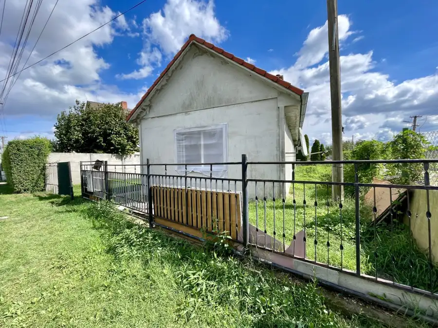
Rodinné domy10 58 000 €Rodinný dom s útulným pozemkom na predaj v obci Pataš Pataš 70 m² Ponúkame Vám na predaj rodinný dom s útulným pozemkom v obci Pataš. Rodinný dom pozostáva z dvoch nepriechodných izieb, z kuchyne a z kúpeľne so…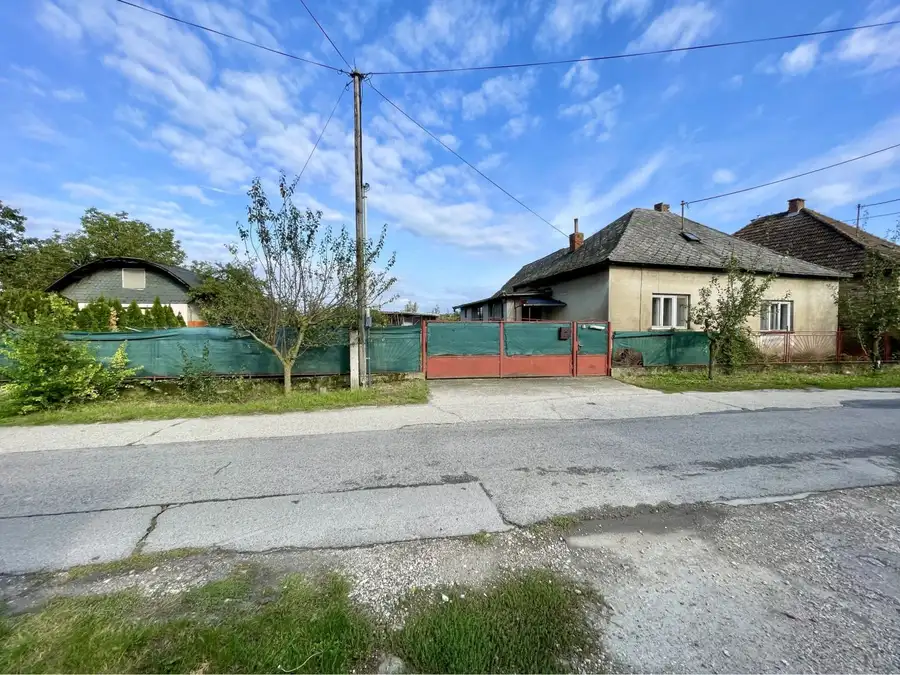
Pozemok7 73 000 €Jahodná – slnečný pozemok s starým rodinným domom na predaj Jahodná 601 m² Ponúkame Vám na predaj stavebný pozemok so starým rodinným domom v obci Jahodná. POZEMOK výmera: 601 m2 rovinatý betónová prístupová cesta kľudná…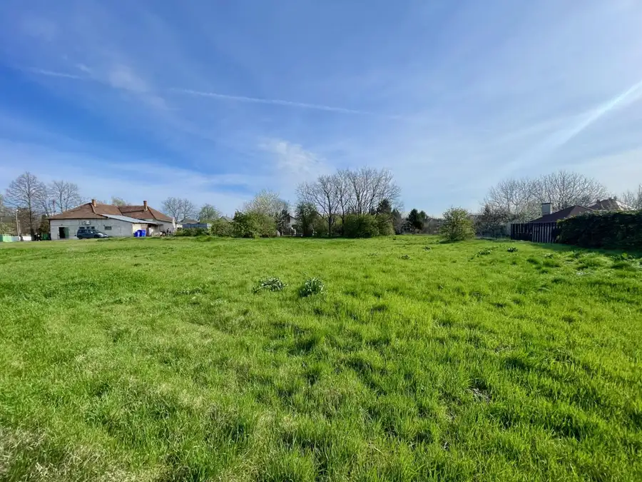
Pozemok3 80 000 €Okoč – pozemok na predaj v centre dediny Okoč 901 m² Ponúkame Vám na predaj slnečný stavebný pozemok v centre obci Okoč - Opatovský Sokolec. Pozemok môže byť vhodný na príjemné bývanie Vašej rodiny,…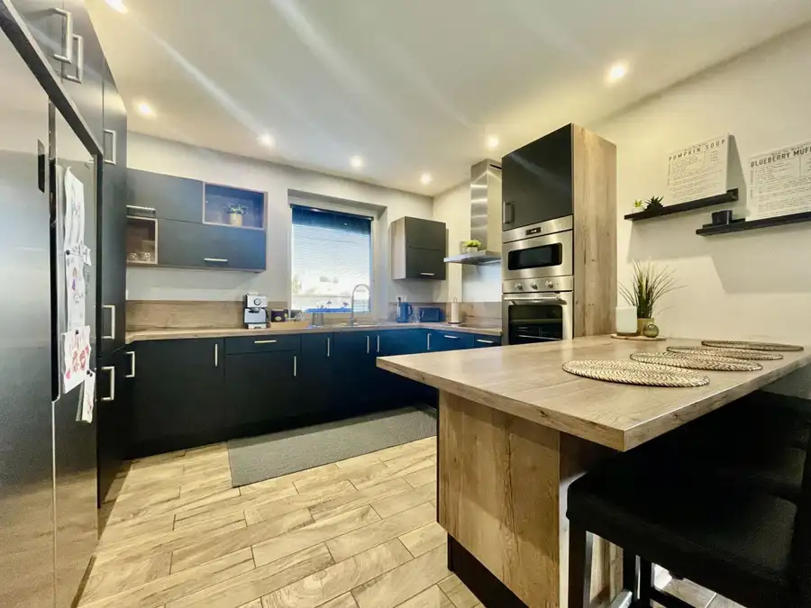
Rodinné domy10 274 000 €A-w real | moderný 4-izbový rodinný dom s terasou na predaj v obci Mad Mad 122 m² Ponúkame na predaj svetlý 4-izbový rodinný dom s modernou šikmou strechou v obci Mad (okres Dunajská Streda). Nehnuteľnosť s úžitkovou plochou 122 m²…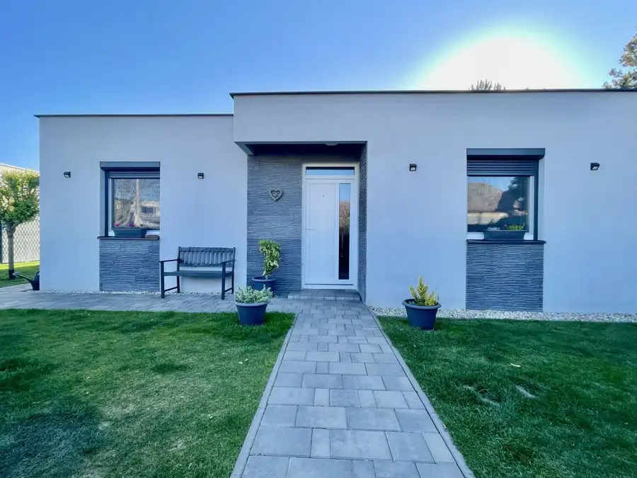
Rodinné domy10 274 000 €A-w real | moderný 4-izbový rodinný dom s terasou na predaj v obci Mad Dunajská Streda 122 m² Ponúkame na predaj svetlý 4-izbový rodinný dom s modernou šikmou strechou v obci Mad (okres Dunajská Streda). Nehnuteľnosť s úžitkovou plochou 122 m²…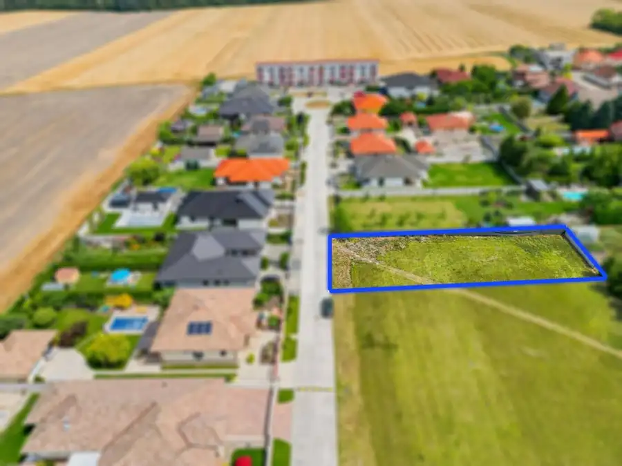
Pozemok4 135 000 €Stavebný pozemok v novej štvrti obce Ohrady – 969 m² Ohrady 969 m² Hľadáte ideálne miesto pre výstavbu vášho vysnívaného rodinného domu? Ponúkame Vám na predaj krásny rovinatý stavebný pozemok s výmerou 969 m²,… Pozemok4
135 000 €Stavebný pozemok v novej štvrti obce Ohrady – 969 m²
Dunajská Streda
969 m²
Hľadáte ideálne miesto pre výstavbu vášho vysnívaného rodinného domu? Ponúkame Vám na predaj krásny rovinatý stavebný pozemok s výmerou 969 m²,…
Pozemok4
135 000 €Stavebný pozemok v novej štvrti obce Ohrady – 969 m²
Dunajská Streda
969 m²
Hľadáte ideálne miesto pre výstavbu vášho vysnívaného rodinného domu? Ponúkame Vám na predaj krásny rovinatý stavebný pozemok s výmerou 969 m²,…
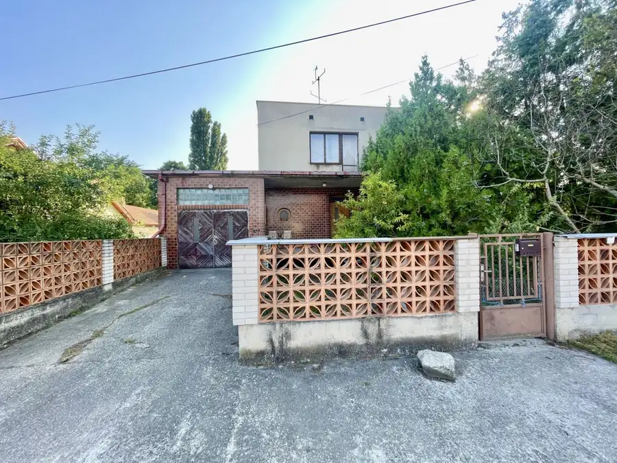
Rodinné domy10 145 000 €Rodinný dom s garážou a veľkým potenciálom v obci Padáň Padáň 124 m² Realitná kancelária A-W REAL ponúka na predaj rodinný dom v pokojnej obci Padáň, ktorý predstavuje skvelú príležitosť pre nových majiteľov vytvoriť…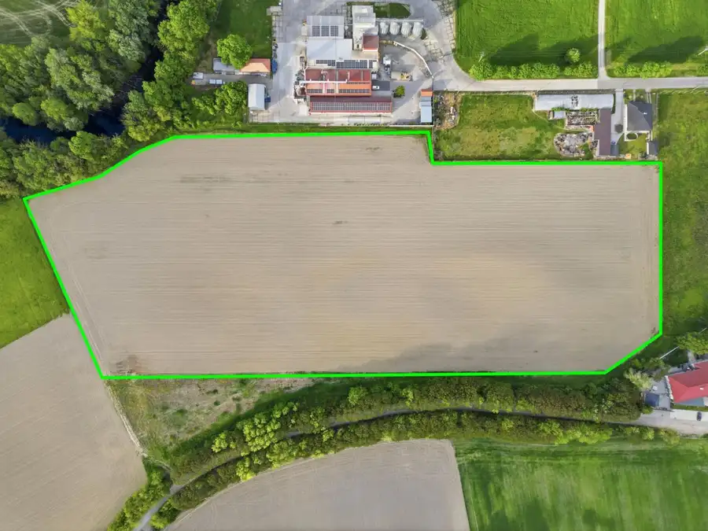
Pozemok5 398 072 €Investičný pozemok na predaj │ výnimočná príležitosť pre investorov Dunajský Klátov 49759 m² Veľké investície začínajú správnym rozhodnutím. Ak hľadáte nehnuteľnosť s potenciálom budúceho rastu hodnoty, táto ponuka patrí medzi príležitosti,…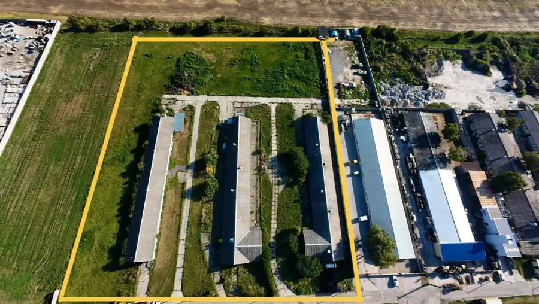
Nebytové priestory10 2 000 €Kostolné Kračany - skladový - prevádzkový priestor na prenájom Kostolné Kračany 881 m² Ponúkame Vám na prenájom skladový - prevádzkový priestor. Celková výmera pozemku 3581 m2, z toho zastavaná plocha 881 m2, voľné plochy okolo stavby…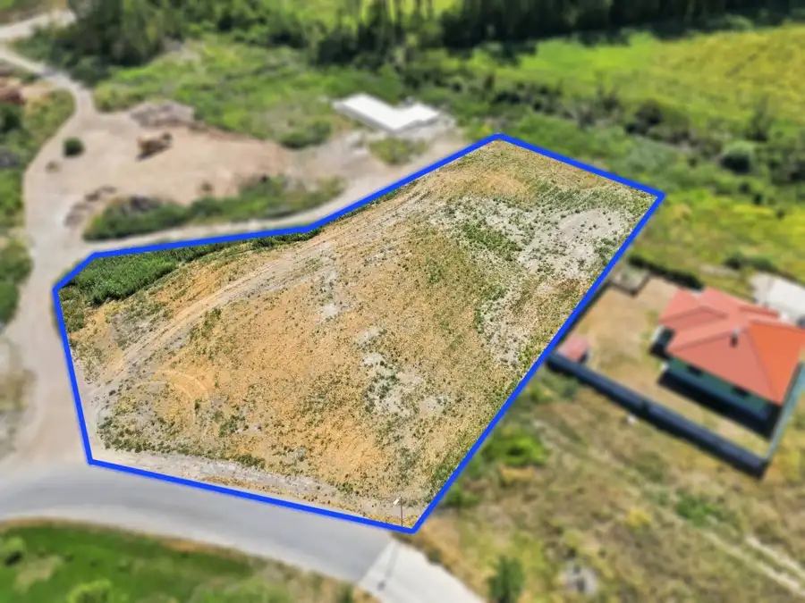
Pozemok4 48 750 €Stavebné pozemky v Dunajskom Klátove – pokojné bývanie v blízkosti prí Dunajský Klátov 750 m² Ponúkame na predaj stavebné pozemky v obci Dunajský Klátov, situované v príjemnej a pokojnej lokalite medzi novostavbami rodinných domov. Pozemky sú…Tomuto výberu zatiaľ nezodpovedá žiadna ponuka. Napíšte mi, čo hľadáte.